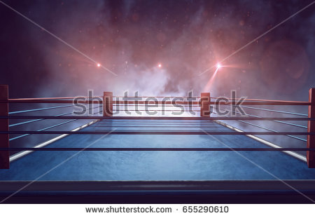

The Arena

The design of this stage is that of a boxing arena, where the ropes mark the edge of the stage, creating unique recovery and edgeguard strategies. The ropes give increased running speed to characters that bounce off of them, and gives midair characters a boost when they land on them. The stage lighting is interspersed with blackouts. Memorize this timing and where your opponent is right before the blackout, that way you can capitalize on them under cover of darkness.
Arena is a fan favorite and is chosen often in tournament play. Master the use of the arena ropes to catch your opponents off guard and land damage while they are confused.